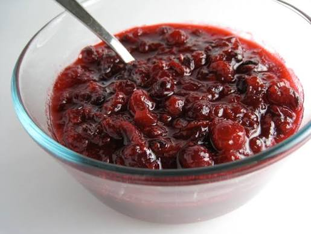

Cranberry Sauce

Plate of cranberry sauce
Cranberry sauce is a vibrant, ruby-red condiment made by simmering fresh or frozen cranberries in water and sugar until the berries burst and release their natural pectin, thickening into a glossy, jam-like compote. Known for its bold, sweet-tart flavor profile, it delivers a bright, tangy punch that cuts through rich, savory foods—making it a classic accompaniment to roasted turkey, holiday feasts, and leftovers.
Ingredients
- Fresh or frozen cranberries: 12 oz (1 standard bag / about 3 cups), rinsed and picked over
- Granulated sugar: 1 cup (can use half white and half brown sugar for deeper flavor)
- Water: 1 cup (or substitute with orange juice for extra citrus brightness)
- Salt: A pinch (balances the tartness)
- Optional flavor boosters: 1 teaspoon orange zest, 1 cinnamon stick, or a splash of vanilla extract
Steps
- Dissolve the sugar: Combine the water (or orange juice), sugar, and pinch of salt in a medium saucepan over medium heat. Stir occasionally until the sugar completely dissolves and the liquid comes to a gentle boi
- Add the cranberries: Stir in the cranberries (and optional cinnamon stick) and bring the mixture back to a boil.
- Simmer until burst: Reduce the heat to medium-low and simmer uncovered for about 10 to 15 minutes, stirring occasionally, until most of the cranberries pop open and the sauce begins to thicken. (If you prefer a smoother sauce, gently mash some of the berries against the side of the pot with a wooden spoon.)
- Finish and cool: Remove the pan from the heat, discard the cinnamon stick if used, and stir in the orange zest or vanilla extract. Let the sauce cool to room temperature—it will continue to thicken into a jam-like consistency as it cools—then transfer to a bowl and chill before serving.
Home